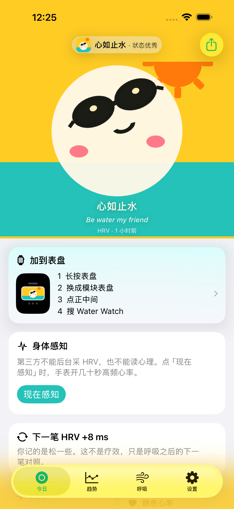

水态，而不是诊断
心如止水、水面微澜、潮水上来了、波涛汹涌。四档只描述身体负荷，不判断你的心情。
手腕上的一池水。用 HRV 和静息心率理解身体负荷，不把身体信号说成情绪，也不假装实时。
需要 iOS 18 或更高版本。部分功能需要 Apple Watch 与健康 App 授权。

HRV 与日常趋势只使用健康 App 中已经存在的数据；你主动点“现在感知”时，手表才会临时采集实时心率并在结束后停止体能训练。没有个人基线时先校准，不用一个孤立数字吓你。
心如止水、水面微澜、潮水上来了、波涛汹涌。四档只描述身体负荷，不判断你的心情。
第三方不能催 Apple Watch 后台采样 HRV。界面展示健康 App 已记录的点，通常不是实时数据。
负荷较高时，手腕可以轻震提醒。你也可以主动记录正念分钟、饮水与咖啡因。